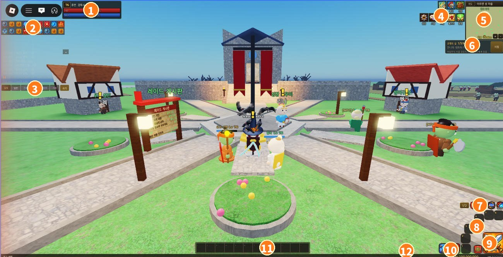
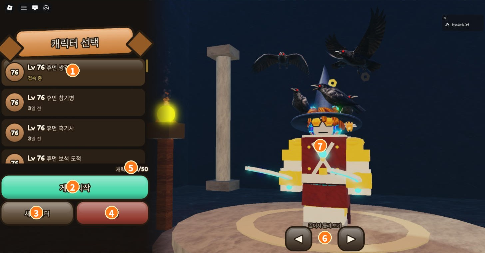
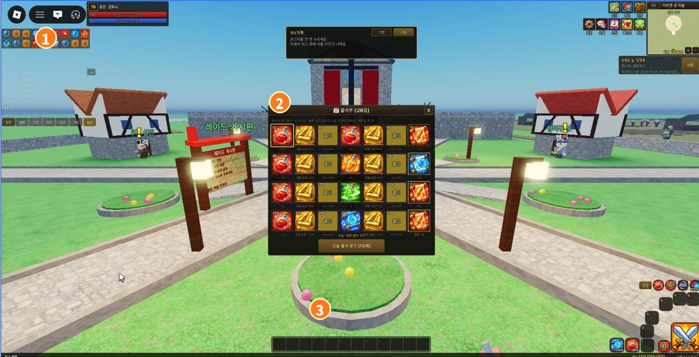

Interface Guide
Based on the phone landscape layout. Numbers match the picture.
Battle screen (HUD)

- 1Status — level, class, HP, MP
- 2Buff row — tap an icon for name and time left
- 3Chat tabs & log — All/Say/World/Party/Clan/Trade; tap to collapse
- 4Menu 3×2 — Map · Character · Bag / Skills · Quests · Healer
- 5Minimap — zone name and your position
- 6Quest panel — current step and [Go] (auto-walk)
- 7Auto row — [1/2] page, [HP] auto potion, [Field] auto hunt, [Skill] auto skills, [Shot] auto shots
- 86 skill slots — quarter circle around Attack (page 1 = 1–6, page 2 = 7–12). Long-press to remove
- 9[Attack] — hit the target / auto attack
- 102 item slots — HP potion, return scroll (changeable from the bag)
- 11Bottom toggle bar — toggles and buffs (PC Shift+1~=). [A] badge on a slot = auto
- 12XP bar · Gold · Bag slots
The target window appears top-center when you tap a monster (name, level, HP). Aggressive monsters show a red ring, passive ones yellow.
Character select

- 1Character list — level, race, class, last played (tap to select)
- 2[Start Game] — enter with the selected character
- 3[New Character] — race, branch, sex, look
- 4[Delete] — remove the selected character (asks again)
- 5Character count (max 50)
- 6◀ ▶ rotate preview (drag works too)
- 73D preview of the selected character — gear and look as-is
Buff picker

- 1Active buffs
- 2Buff board — choose buffs the mercenary buffer casts (auto-buff in ⚙ Settings)
- 3[Close]
Flow: forming a party
- Tap another player → small menu under the name
- [Invite to party] → accept/decline on their screen
- Menu › Social › Party tab: member HP, loot rule (round-robin / dice), leave
- XP is shared among nearby members (large level gaps earn less)
Flow: starting auto hunt
- Go to a hunting ground (Map › zone › [Go])
- Turn on [Field] in the auto row → hunts nearest monsters
- Turn on [Skill] for auto skills. Buffs/toggles with the [A] badge are kept up automatically
- Turn on [HP] to drink potions under the set HP %
- Long-press [Field] → range (near/normal/wide/stay), target rules, skip high levels
Flow: enchanting
- Bag › tap an enchant scroll → [Use]
- Pick gear of the same grade → chance shown → [Enchant]
- Success: +1 and glow / Fail: breaks into Dragon Scales
PC layout notes will be added after testing.